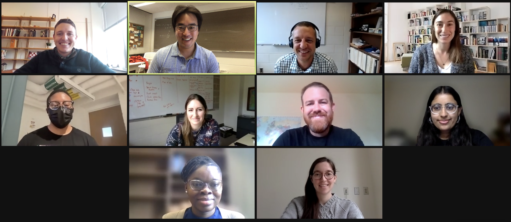

Statistical & Data Sciences
This website is managed by the SDS faculty. For our official website, please visit smith.edu.
Please see our list of resources for self-study
Who we are
- Top row: Scott LaCombe, Albert Y. Kim, Benjamin Baumer, Randi Garcia
- Middle row: Arris Moise (SDS Coalition of Color student rep), Lindsay Poirier, William Hopper, Marium Tapal (Smithies in SDS student rep)
- Bottom row: Fatou Sanogo, Katherine M. Kinnaird
- Not pictured: Katherine Halvorsen